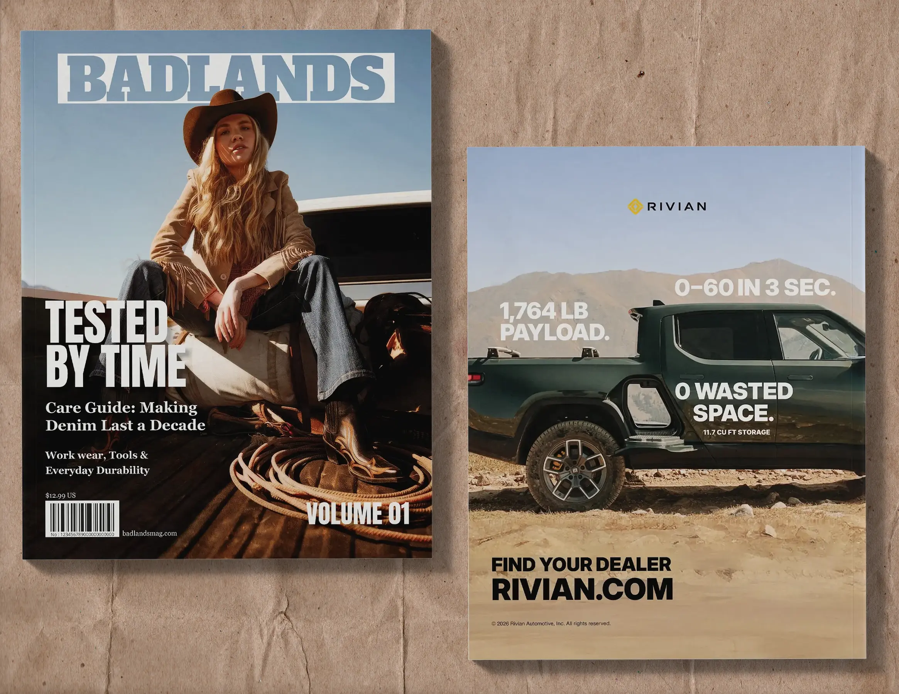
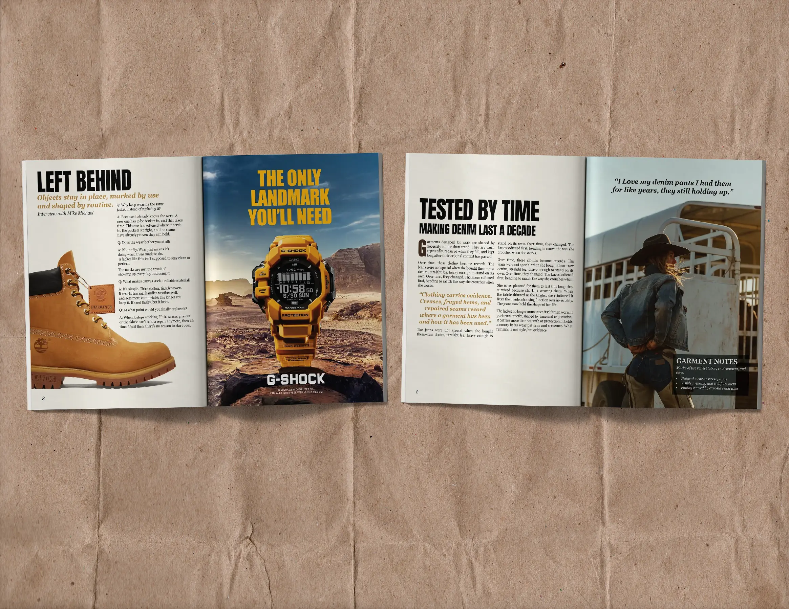
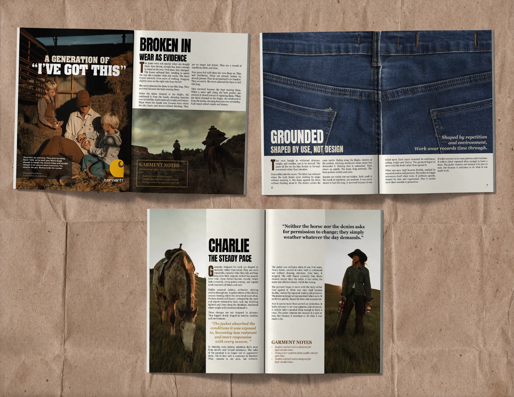
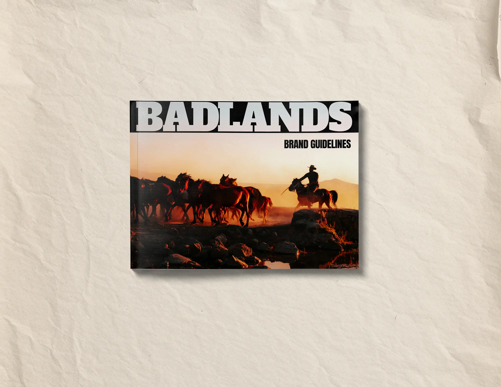
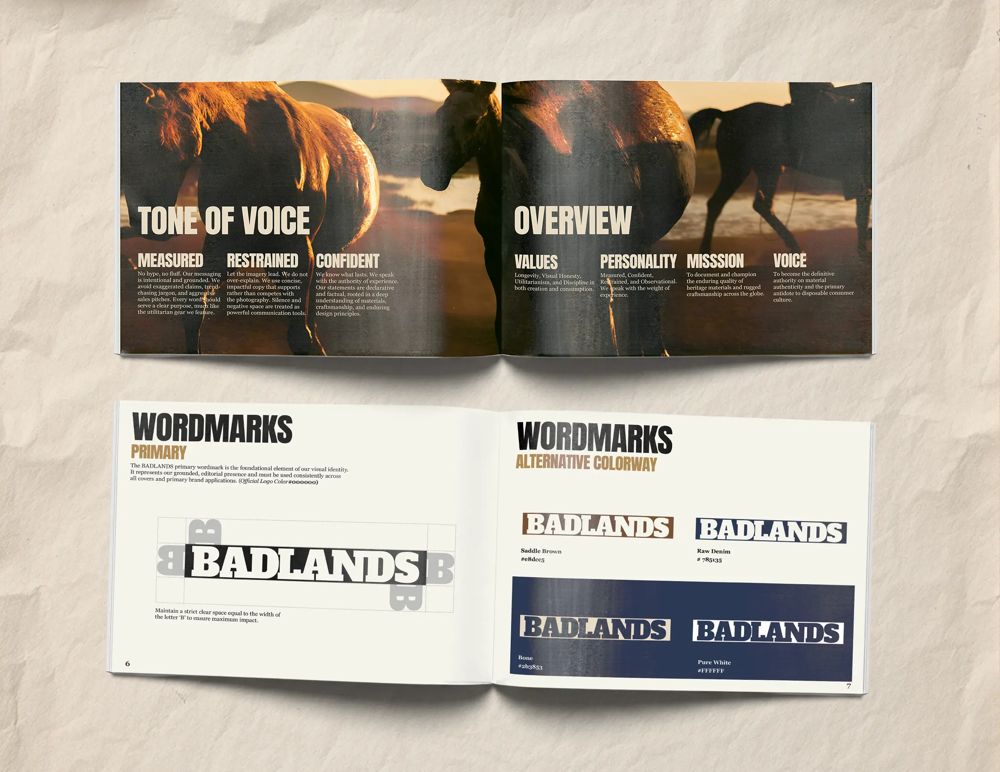
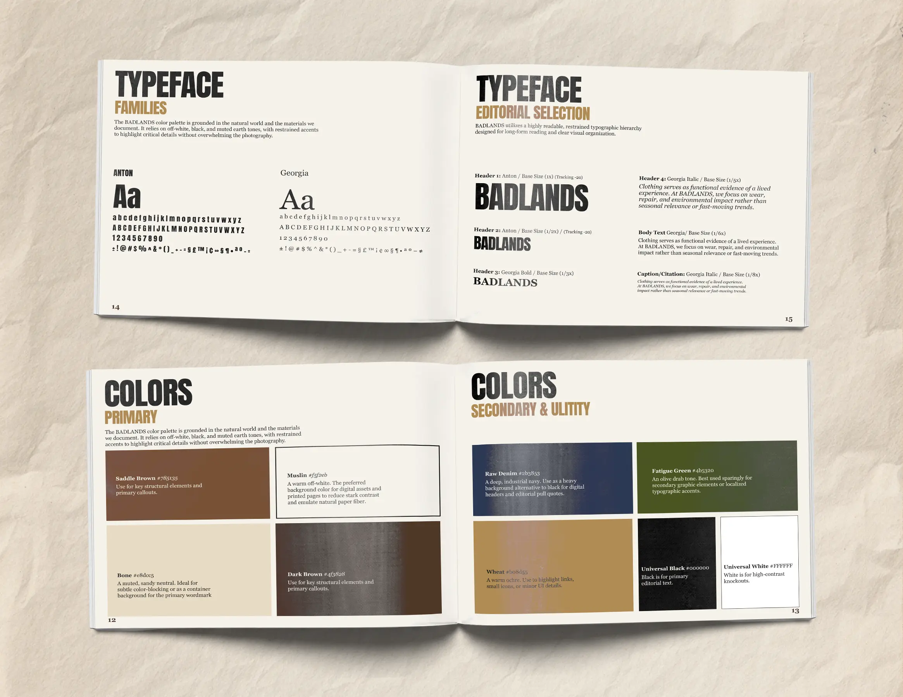
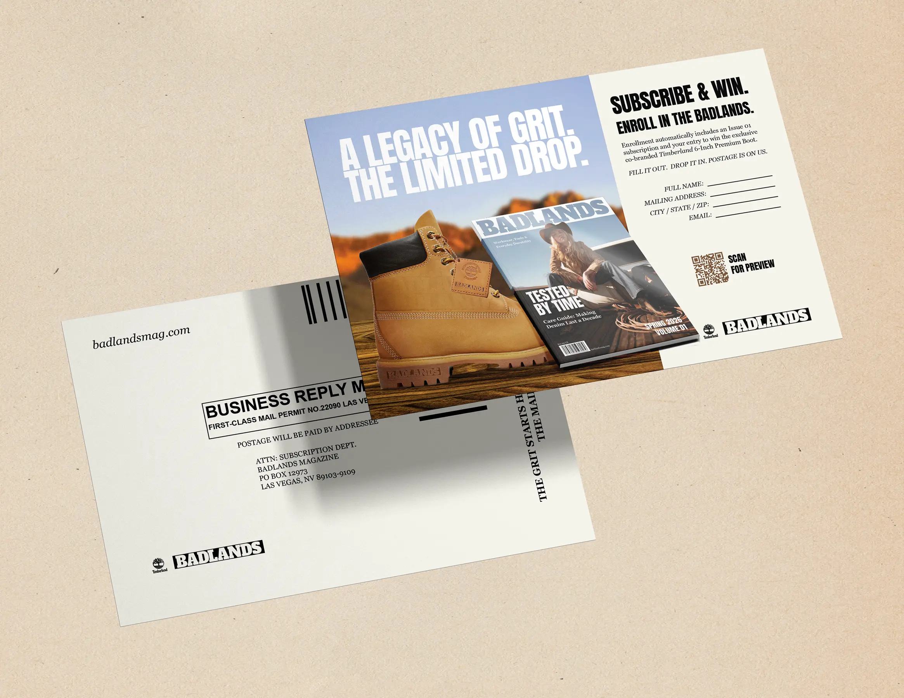

Problem
Fashion magazines often chase short-lived trends. The goal was to create a publication that felt timeless, practical, and rooted in real stories.
A conceptual first issue of a fictional fashion magazine inspired by western culture and designed for a younger audience.
Fashion magazines often chase short-lived trends. The goal was to create a publication that felt timeless, practical, and rooted in real stories.
A restrained editorial system, muted colors, structured grids, and minimal typography let the photography and writing take center stage.
The final magazine feels grounded, cohesive, and distinctive, establishing Badlands as a believable brand with its own editorial voice.







